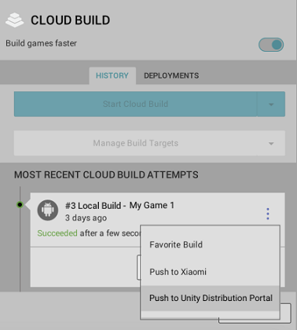
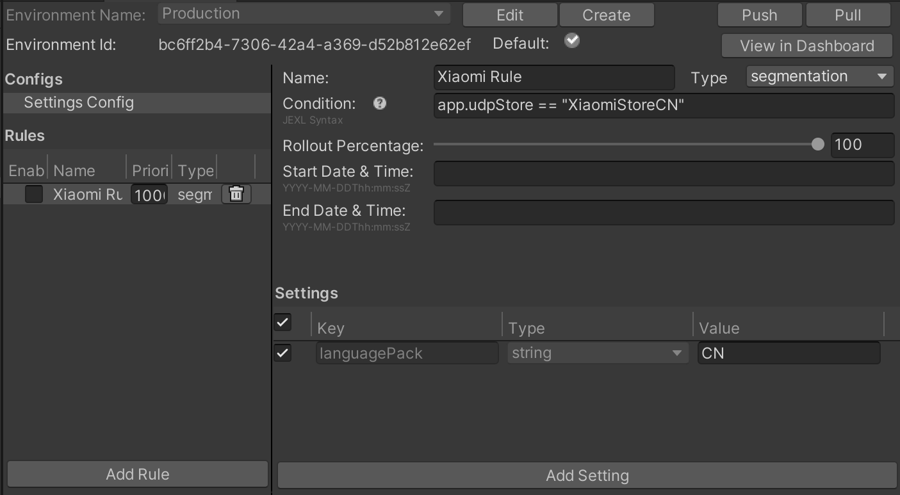
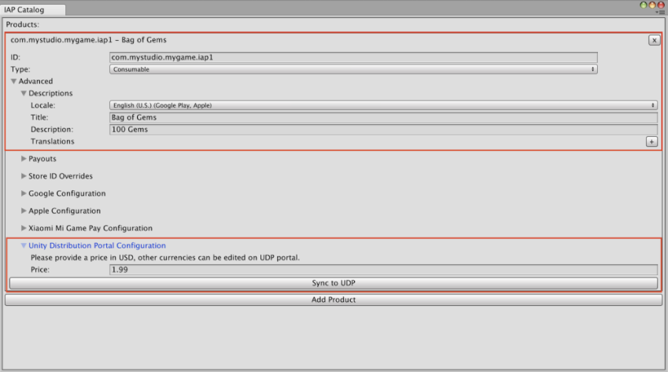

Implementing Google Play games services in your Android games lets you leverage Google’s service layer for features such as achievements and leaderboards. If your game implements Google Play game services, additional configuration is required to support the builds that UDP creates for different stores.
When your game invokes Google Play games services, Google Play games services checks that the following details match the information registered on the Google Play Console:
If they don’t match, the player can’t log into the application with Google Play games services.
For certain stores that you publish your game to via UDP, UDP adds a store-specific suffix to the package name. Additionally, if you don’t use your own private key to generate the certificate, UDP generates a certificate for each repacked build. These events would cause your certificate and/or package name to no longer match the information on the Google Play Console. This would prevent users from logging into the game with Google Play game services.
The following section explains how to resolve this issue.
This section explains how to link your UDP versions to a Google Play application so that Google Play game services can work on all of them.
This section explains how to create a Google Play games services project and link it to a new or existing cloud project.
If you selected Yes, my game already uses Google APIs in the Play Games Services setup page:
If you selected No, my game doesn’t use Google APIs in the Play Games Services setup page:
When you create a new Play Games Services project, the Add credential link is disabled.
When you’ve completed the above steps, your Google Play game is linked to its Google Play games services. The next step is to link your UDP builds to the games services.
When you have linked your app to Google Play games services you can link the other (UDP) apps to the games services.
openssl x509 -in [downloaded-pem-filepath] -fingerprint -noout
You can view the UDP builds you’ve linked to your Google Play application in the Google Cloud Platform > Google API & Services dashboard, under Credentials.
These steps enable Google Play games services to work successfully on all the UDP store versions that are linked that way, excluding Mi GetApps (whose SDK integrates an old version of Google Mobile Services, which creates conflicts).
Note: Any changes to Google’s systems could impact the solution described above. For more information on Google’s troubleshooting information, see the Google documentation.
可通过以下方式使用 Cloud Build 将游戏部署到 UDP 控制台：
本节介绍如何使用 Cloud Build 将游戏推送到 UDP。 在 Unity 编辑器中通过 Unity Services 窗口启用 Cloud Build。
要通过 Unity 编辑器中的 Cloud Build 功能将游戏部署到 UDP，你需要上传 UDP 构建版本并将其推送到 UDP。
1.在 Cloud Build Services 窗口中，如果先前从未上传过任何构建版本，请选择 Upload Build。
1.在 FILE 中：
* 选择 UDP 构建版本的 APK
* 在 LABEL 中输入有用的标签
* 将 PLATFORM 字段设置为 Android。
1.选择 UPLOAD，然后等待完成上传过程。
1.在 Cloud Build Services 窗口中，根据构建版本的 History 时间轴找到所需的构建版本，然后选择 Push to Unity Distribution Portal。
1.确认想要推送，然后确认操作完成。

要通过 Unity Dashboard 中的 Cloud Build 功能将游戏部署到 UDP，你需要将 UDP 构建版本上传到 Unity Dashboard 并从其中推送到 UDP。
1.在 Unity 开发者控制面板 (Developer Dashboard) 中，导航到项目的 Cloud Build > History。 1.选择 Upload，然后选择 APK 文件。 1.在 Platform 字段中，选择 Android。 1.选择 Upload。 1.选择构建版本旁边的 More 菜单以展开下拉菜单。 1.选择 Push to Unity Distribution Portal。
如果使用的是 Unity Teams Advanced，你可以自动生成构建版本。
在 Cloud Build Services 窗口中：
1.选择 Manage Build Targets > Add new build target 1.在 TARGET SETUP 窗口中，将 PLATFORM 字段设置为 Android 并输入有用的 TARGET LABEL。 1.选择 Next: Save。 1.选择 Start Cloud Build，然后选择刚才创建的目标构建版本。
通过 Unity Cloud Build 开发者控制面板 (Developer Dashboard) 将构建版本直接推送到 UDP（如上所示）。
UDP 可以让游戏使用的其他服务了解该游戏是从哪个商店下载的。
Unity 服务以及第三方服务或你自己的服务可以多种方式使用这一信息。
例如，在使用 Unity Remote Config 时，你可以根据定义的规则（例如，从哪个商店下载的游戏）来调整游戏设置。
本节介绍如何让其他服务访问此信息，并提供了一个示例。
当游戏首次在玩家的设备上启动时，UDP 将创建 udp.json 文件并将其放入游戏的“持久数据路径”(Persistent Data Path) 中。此文件包含的字段 udpStore 会显示游戏是从哪个商店下载的。可获取该信息以按预期方式使用它。
注意：这不会在游戏清单中添加任何新的权限。
udp.json 文件保存在：
Application.PersistentDataPath + '/Unity' + /Application.CloudProjectID + /udp/udp.json
其中：
Application.PersistentDataPath 是游戏的持久数据路径Application.CloudProjectID 是游戏的 Unity 项目 ID以下是一个 udp.json 文件路径示例：
path/storage/emulated/0/Android/data/com.mystudio.mygame/files/Unity/c83d2de2-de74-4b75-83fc-ade948bda064/udp/udp.json
其中：
Application.PersistentDataPath= path/storage/emulated/0/Android/data/com.mystudio.mygame
Application.CloudProjectID= c83d2de2-de74-4b75-83fc-ade948bda064
udp.json 文件包含以下信息：
{"key":"UDP","udpStore":"StoreName","udpClientId":"value_of_udpClientId","CloudProjectId":"value_of_CloudProjectId"}
udpStore 字段包含的值就是下载游戏的 UDP 商店。
以下是一个 udp.json 文件示例：
{“key”:“UDP”,“udpStore”:“SamsungGalaxyStore”,“udpClientId”:“icjaB7wmu_q7AOjrSLH8yw”,“cloudProjectId”:“bc2be074–09f3–450f–8e98-a0f79c9746f7”}
在此示例中，游戏是从 Samsung Galaxy Store 下载的。
提示：使用 JSONUtility.FromJsonOverwrite 可将文件内容作为文本资源读取。
下表列出了 UDP 商店可能的 udpStore 值。
这些值区分大小写。
| 商店（UDP 上的通道名称） | udpStore 的值 |
|---|---|
| UDP Sandbox（适用于通用 UDP 构建版本） | UdpSandbox |
| ONE store | OneStore |
| APPTUTTi | Apptutti |
| VIVEPORT | Htc |
| Mi GetApps (Xiaomi) | XiaomiStore |
| Mi Game Center (Xiaomi China) | XiaomiStoreCn |
| HUAWEI AppGallery | Huawei |
| Samsung Galaxy Store | SamsungGalaxyStore |
| QooApp Game Store | QooApp |
| TPAY MOBILE Stores | Tpay |
| Uptodown | Uptodown |
| SHAREit | ShareIt |
| JioGames | JioGamesStore |
使用 Unity Remote Config 可以在不部署应用程序新版本的情况下优化游戏设置。当玩家启动游戏时，Remote Config 会检测用作规则条件的上下文属性（基于 Unity、应用程序、用户或你定义的自定义条件）。然后，相应服务会根据适用于每个玩家的规则为玩家返回自定义设置。
在规则条件中使用 udpStore 作为属性，就可以根据游戏是从哪个 UDP 商店下载的来确定游戏设置。
要使用 Remote Config 实现 udpStore，请遵循以下步骤。
1.下载并安装 UDP 包。
1.下载并安装 Unity Remote Config 包。请参阅 Remote Config 文档。
1.创建一个 AppAttributes 结构，其中至少包含参数“udpStore”：
public struct AppAttributes
{
public string udpStore;
}
1.在游戏代码中，实现 Remote Config ConfigManager.FetchConfigs 调用。
1.调用 FetchConfigs 时，创建 AppAttributes 结构的新实例，从以下位置读取 UDP 商店数据文件：
Application.PersistentDataPath + ‘/Unity’ + /Application.CloudProjectId + /udp/udp.json
使用 JSONUtility.FromJsonOverwrite 可将文件内容作为文本资源读取。
{
string udpFilePath = System.IO.Path.Combine(Application.persistentDataPath, "Unity", Application.cloudProjectId, "udp", "udp.json");
string udpFileContents = System.IO.File.ReadAllText(udpFilePath);
var appAttr = JsonUtility.FromJson<AppAttributes>(udpFileContents);
Unity.RemoteConfig.ConfigManager.FetchCompleted += ConfigManager_FetchCompleted;
Unity.RemoteConfig.ConfigManager.FetchConfigs(null, appAttr);
}
1.确保在 ConfigManager.FetchConfigs 中使用 AppAttributes 结构。
1.打开 Remote Config 窗口 (Window > Remote Config)，然后创建需要根据 UDP 商店而改变的参数。
1.设置好参数并插入到游戏代码中后，请在 Remote Config 窗口中为每个商店创建一个规则。
1.在每个规则的条件中，放入：app.udpStore == “[storeName]”
* 请参阅 udpStore 的值

1.要启用相应的设置，请在 Remote Config 窗口的左面板上选中规则名称旁边的复选框。
1.针对设备构建应用程序，并确保正确应用规则，然后发布。
如果要使用 Unity IAP 实现 UDP，请首先设置 Unity IAP。
注意：如果选择使用 Unity IAP 版本 1.22.0–1.23.5 来实现 UDP（而不是使用 UDP 包），则仅通过 Unity IAP 实现即可。
Unity IAP 自动进行以下处理：
但是，你的游戏必须根据 Unity IAP 文档正确使用 Unity IAP 的类似功能（例如初始化和购买）。
使用 Unity IAP 实现游戏的应用内购后，请按照以下步骤使用 Unity IAP 设置 UDP。
在获取 IAP 商品以传递给 queryInventory 方法时，请调用 ProductCatalog.LoadDefaultCatalog()。此时会返回编辑器的 IAP Catalog (Window > Unity IAP > IAP Catalog) 中定义的 IAP 商品。
例如：
var catalog = ProductCatalog.LoadDefaultCatalog();
foreach (var product in catalog.allValidProducts)
{
if (product.allStoreIDs.Count > 0)
{
var ids = new IDs();
foreach (var storeID in product.allStoreIDs)
{
ids.Add(storeID.id, storeID.store);
}
builder.AddProduct(product.id, product.type, ids);
}
else
{
builder.AddProduct(product.id, product.type);
}
}
如果你打算在 UDP 控制台上修改游戏的 IAP 目录，请准备好游戏以便从 UDP 控制台获取 IAP 商品信息。
在获取 IAP 商品以便传递给 queryInventory 方法时，请调用 builder.AddProduct 以获取 UDP 控制台上定义的特定 IAP 商品：
builder.AddProduct(product.id, product.type, new IDs{})
要显示带有货币格式的商品价格，请使用 productInfo.Value.Price。
要获取在 UDP 控制台上定义的所有 IAP 商品，请不要调用任何 IAP 商品检索方法。你的游戏随后将从 UDP 控制台获取整个 IAP 目录。
注意：将 IAP 商品的 CSV 文件上传到 UDP 控制台上会完全覆盖你的 IAP 目录。
在 IAP 目录中添加和配置 UDP 应用内购。
注意：如果未在游戏客户端中使用 IAP 目录（例如，如果仅在游戏服务器上维护 IAP 商品），仍必须在 UDP 控制台上创建 IAP 目录。
1.在 Unity 编辑器中，选择 Window > Unity IAP > IAP Catalog。 1.选择 Add Product，然后输入每个 IAP 商品的详细信息。 1.在 Unity Distribution Portal Configuration 下添加 IAP 商品的价格。  1.要将 IAP 商品保存到 UDP 控制台，请选择 Sync to UDP。对你创建的每个 IAP 商品执行此操作。
为了确保正确保存了 IAP 目录，请检查 UDP 控制台中是否显示了所添加的商品。